|
Project
3: ALU 1.
Design a 12-bit ALU that has the following
interface
4-bit
input: operation code We zullen een 12-bit ALU moeten maken die 12 verschillende operaties kan uitvoeren afhankelijk van de 4-bit input (de selector). Onze ALU zal moeten werken voor de twee operands (a en b). We zullen ook gebruik maken van Multiplexers. Het resultaat van de ALU wordt in een 12-bit output geplaatst terwijl we 1 bit gebruiken voor het geval dat er overflow is. 2.
Use your 12-bit carry lookahead adder from
the previous project
Onze CLA nemen we
terug uit onze vorige opdracht. We zullen dit
gebruiken om de ‘numeric addition’ circuit te maken. 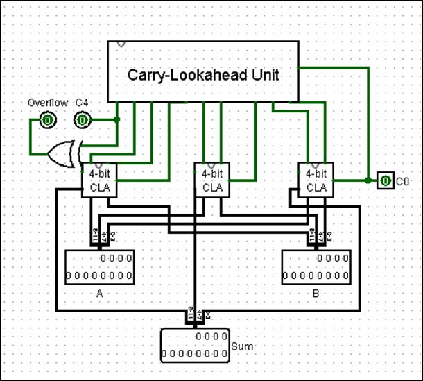 3. ALU
Implementation
Dit zijn de operaties die we hebben gebruikt om onze ALU te bouwen. Onder de operaties vindt u de complete ALU. a) numeric additionHier hebben we de 12-bit CLA uit het vorige verslag gebruikt om de optelling te berekenen. De overflow wordt op de gebruikelijke manier berekend, zoals we in het vorige verslag hebben uitgelegd. 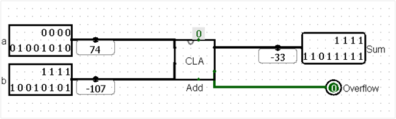 numeric addition (two’s complement) (Name:
add; ALU operation: 0000) b)
numeric subtraction
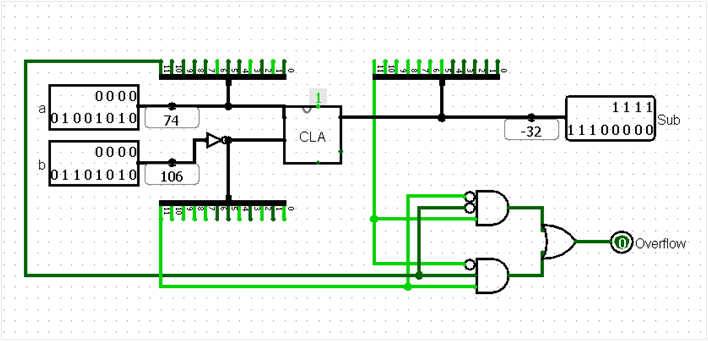 numeric subtraction (two’s complement) (Name: sub;
ALU operation: 0001). Voor deze stap gebruiken we opnieuw de 12-bits CLA uit het vorige verslag. We voegen echter het complement van b toe in plaats van b zelf, en stellen de carry-in in op 1, zodat we het 2's complement van b krijgen en daarmee aftrekken in plaats van optellen. De overflow wordt hier berekend met de expressie z + xy. Als het resultaat gelijk is aan 1, is er overflow; als het gelijk is aan 0, is er geen overflow. Hierbij zijn x en y de sign bits van respectievelijk a en , en z is de sign bit van het resultaat. We kunnen dit interpreteren als: er is overflow als a negatief is en b positief is maar het resultaat positief is, of als a positief is en b negatief is, dan moet de aftrekking van a en b positief zijn, maar het resultaat is negatief. c)
AND en OR
Hier hebben we een normale AND-gate gebruikt met 12-bit inputs en output. 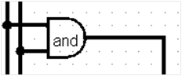 AND (Name: and; ALU operation: 0010) Hetzelfde geldt voor de OR-gate. 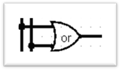 OR d) less than (two’s complement)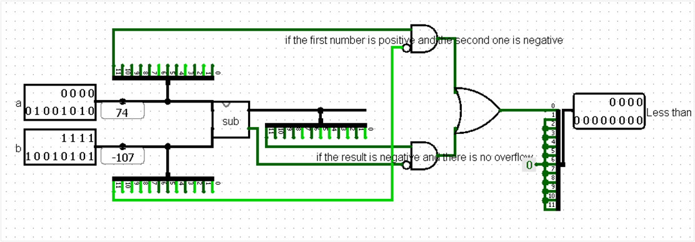 less than (two’s complement) (Name:
lt; ALU operation: 0100) Voor 'less than' hebben we gewoon een 'sub' circuit gebruikt. We bepalen of a kleiner is dan b door te kijken of het resultaat van de aftrekking a – b negatief is en er geen overflow is. In dat geval is a kleiner dan b. Daarnaast, als a negatief is en b positief is, is a ook kleiner dan b. e) greater than
(two’s complement)
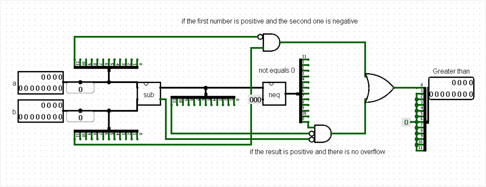 greater than (two’s complement) (Name: gt; ALU operation: 0101) Hier gebruiken we bijna hetzelfde concept als bij 'less than', maar er zijn twee AND-gates die bepalen of a groter is dan b. De bovenste gate controleert of de MSB van a gelijk is aan 0 en die van b gelijk is aan 1. Dit betekent dat a positief is en b negatief, dus a > b. De onderste AND-gate controleert of er geen overflow is en of het resultaat van de aftrekking negatief is (door naar het sign bit of MSB te kijken), en ook of het resultaat niet gelijk is aan 0. f)
equals
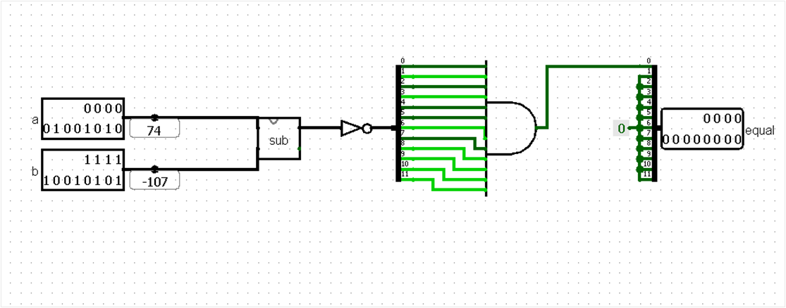 equals (Name: eq; ALU operation: 0110) Om gelijkheid (equal) te bepalen, gebruiken we hier een ‘subtraction’ gate. Daarna sturen we alle bits van het resultaat door een NOT-gate en verbinden deze met een AND-gate. Als a = b, dan is a – b = 0. Dus om een resultaat van 1 te krijgen bij ‘equal’, moet het resultaat van de aftrekking 0 zijn. g) not equals
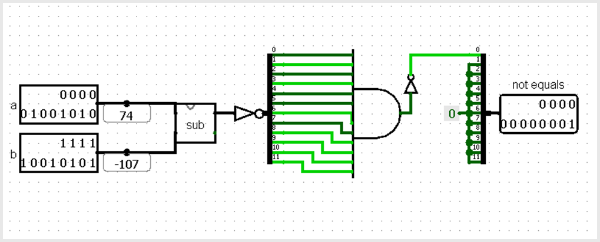 not equals (Name: neq; ALU operation: 0111) Hier hebben we hetzelfde circuit als bij ‘equals’ gebruikt, maar met een extra NOT-gate om het omgekeerde te krijgen. h) NOT
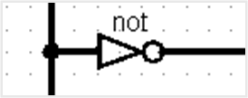 NOT (Name: not; ALU operation: 1000) Hier hebben we een standaard 12-bit NOT-gate gebruikt, en het werkt perfect! i)
numeric inverse (two’s complement)
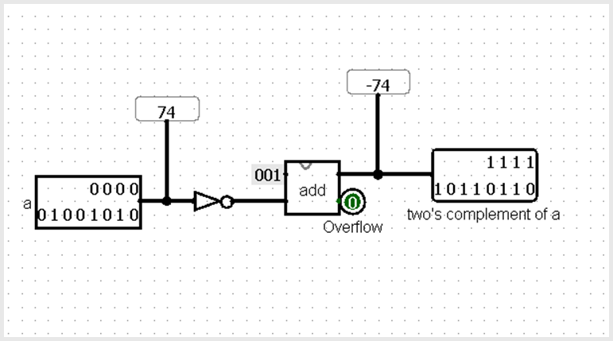 numeric inverse (two’s complement) (Name: inv; ALU operation: 1001) Om het two’s complement van een getal a te krijgen, berekenen we eerst het complement van dat getal (1’s complement) met behulp van een NOT-gate. Vervolgens tellen we daar 1 bij op, en zo verkrijgen we uiteindelijk de numeric inverse (two’s complement). Overflow kan hier optreden als de inverse buiten het bereik valt. Bijvoorbeeld: de inverse van -2048 is 2047 + 1, wat resulteert in -2048. j)
shift left logical (two’s complement)
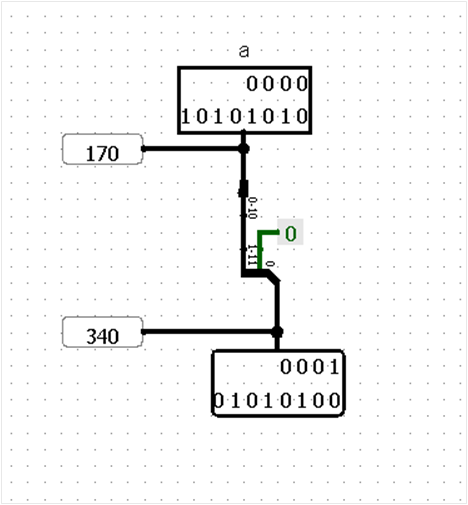 shift left logical (two’s complement) (Name: sll; ALU operation: 1010) Hier verschuiven we de bits eenvoudig één positie naar links met gebruik van een ‘Splitter’ en zetten we de LSB op 0. k) shift right
logical (two’s complement)
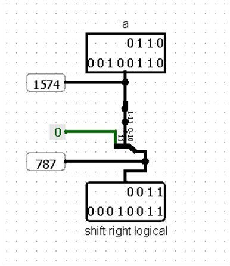 shift right logical (two’s complement) (Name: srl; ALU operation: 1011) Hier verschuiven we de bits eenvoudig één positie naar rechts met gebruik van een ‘Splitter’ en zetten we de MSB op 0. l)
shift left arithmetic (two’s complement)
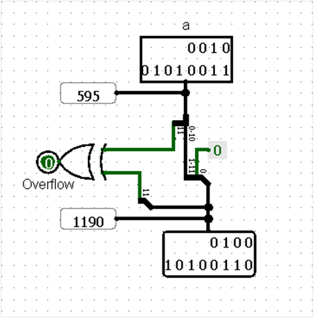 shift left arithmetic (two’s complement) (Name: sla; ALU operation: 1100) Hier verschuiven we opnieuw de bits één positie naar links met behulp van een ‘Splitter’ en zetten we de LSB op 0. We controleren echter ook op overflow, die optreedt als a positief is en het resultaat negatief wordt, of omgekeerd. m) shift right
arithmetic (two’s complement)
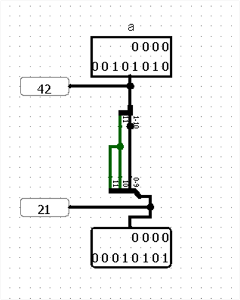 shift right arithmetic (two’s complement) (Name: sra; ALU operation: 1101) Hier verschuiven we de bits eenvoudig één positie naar rechts met behulp van een ‘Splitter’, maar we zetten de MSB gelijk aan de MSB van het oorspronkelijke getal a. n) generate 0
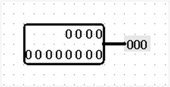 generate 0 (Name: zero; ALU operation: 1110) Hier verbinden we eenvoudig de output met een constante 0, en dat is alles. o) no operation
Hier verbinden we de input rechtstreeks met de output zonder enige operaties. 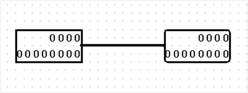 no operation (Name: noop; ALU operation: 1111) p) de complete
ALU
Voor de ALU hebben we 2 multiplexors nodig die beiden hun eigen functies hebben, de eerste multiplexor gebruiken we om de juiste operaties uit te voeren zodat we een correcte output/resultaat bekomen. De tweede gebruiken we in het geval van overflow. Bij de eerste multiplexor verbinden we alle operaties en de ALU-code en is de ALU-code de selector. Bij de tweede multiplexor nemen we de overflows voor de addition, substraction, inverse, shiftleftarithemtic. Uit deze multiplexer volgt een overflow error (als er eentje zou zijn). Hier is onze ALU-code ook onze selector. Als we de operaties en de Multiplexors samen met de ALU-code samenvoegen, dan ziet onze ALU er als volgt uit: 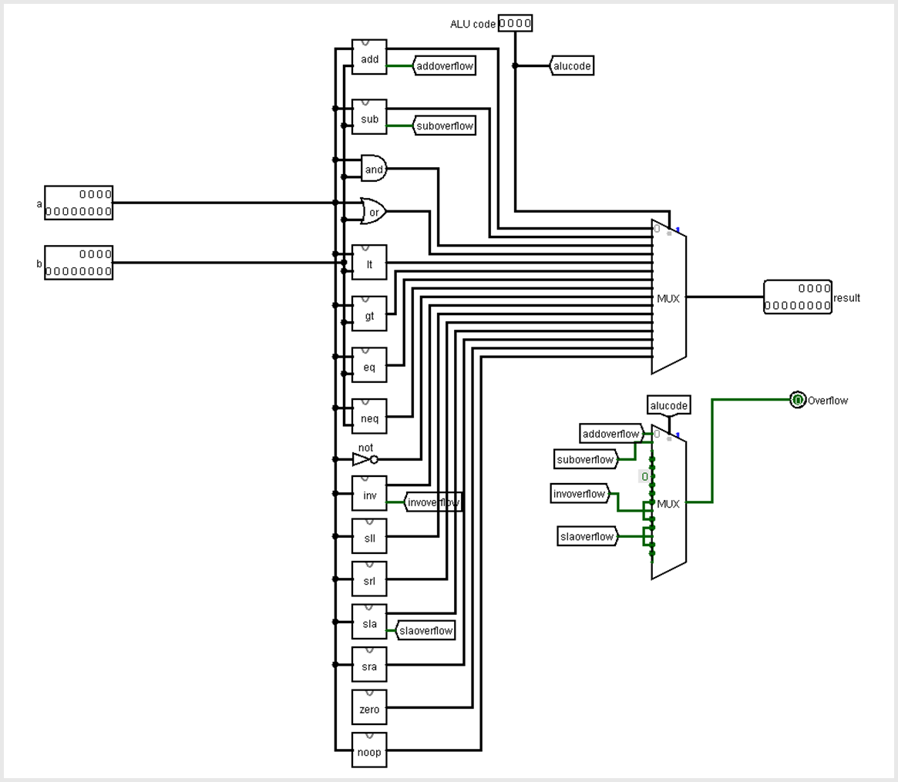 4.
Run the test files for your ALU
We hebben alle tests uit de ALU-map uitgevoerd, en alles is gelukt; we kregen geen errors. U kunt de testresultaten vinden in de bijbehorende bestanden. 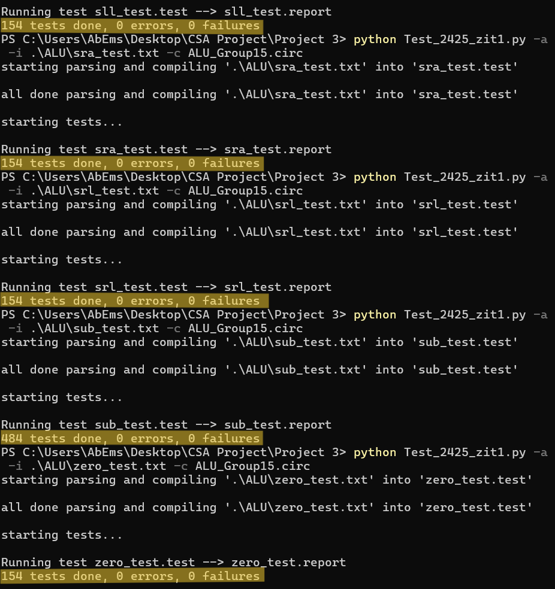 |